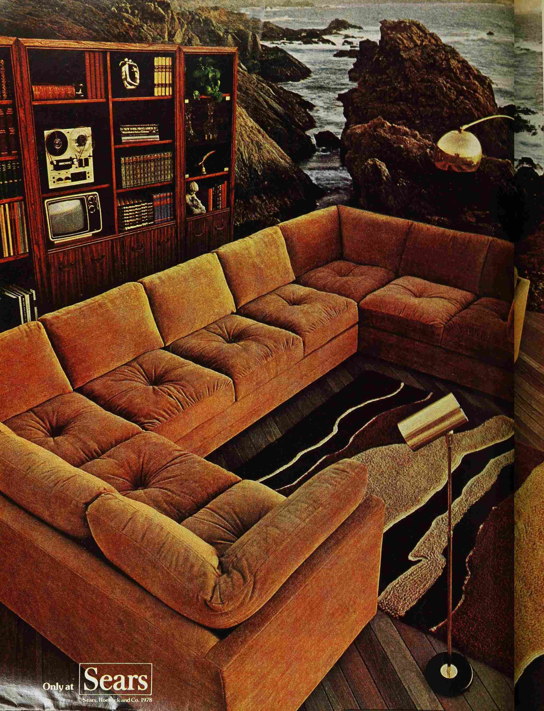
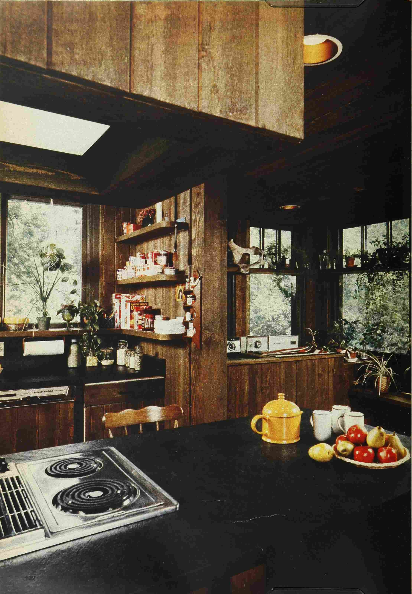
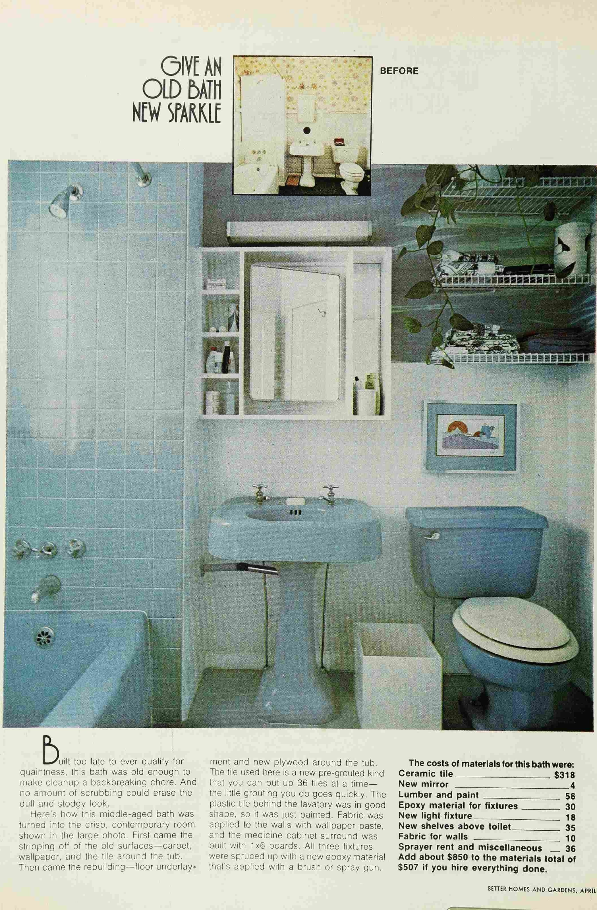
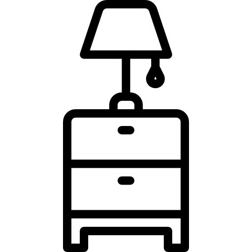
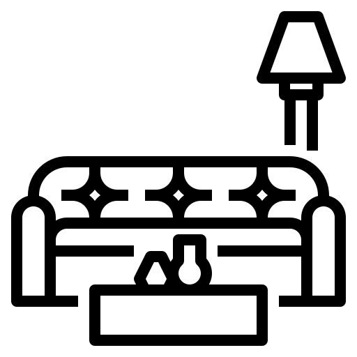

Overview
This project explores how 1970s interior design images from magazines can be organized using structured descriptive categories. Rather than focusing only on visuals, the project analyzes how design is described through language.
Data Collection
- Architectural Digest
- Better Homes and Gardens
Each image represents a room or interior space. The goal is to organize and describe them in a consistent, searchable way.
Archive Preview

Living Room
Green, wood, modern

Kitchen
Orange laminate, vinyl

Bedroom
Beige, fabric, soft textures
Ontology
Room Type
Living room, kitchen, bedroom, bathroom
Colors
Red, orange, yellow, green, earth tones

Style
Modern, rustic, minimalist, vintage
Materials
Wood, marble, glass, metal

Furniture
Table, couch, bed, chair
Data Structure (XML Example)
<mag>
<ptr target="image1.jpg"/>
<roomType>living room</roomType>
<colors>green, beige</colors>
<style>modern</style>
<materials>wood, fabric</materials>
</mag>